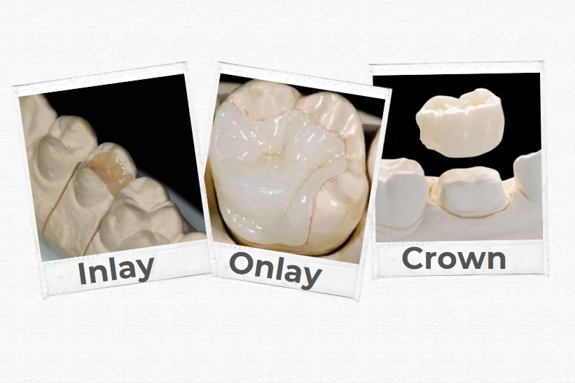
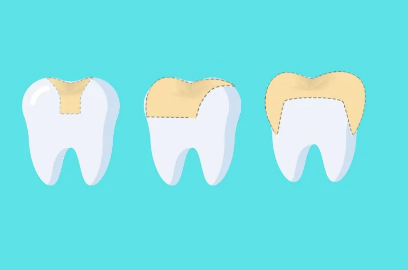

Pacjenci, którzy muszą leczyć ubytki, często słyszą o kilku możliwościach odbudowy zębów. Do najczęstszych rozwiązań należą inlaye, onlaye i korony. Wybór między inlayem i onlayem a koroną bywa przytłaczający, zwłaszcza gdy pacjent nie wie, która opcja najlepiej odpowie na jego potrzeby. Każde z tych rozwiązań ma swoje zalety, zależnie od stopnia uszkodzenia zęba i oczekiwanego efektu.
Dzięki postępom współczesnej stomatologii inlaye i onlaye są coraz częściej wybierane, ponieważ pozwalają zachować więcej naturalnej struktury zęba niż korony, które pokrywają cały ząb. Korony stanowią pełną osłonę ochronną, a inlaye i onlaye oferują bardziej oszczędne podejście, obejmując tylko te obszary zęba, które wymagają odbudowy. Obie metody są trwałe i długowieczne, ale zrozumienie różnicy między inlayem i onlayem a koroną jest kluczem do świadomej decyzji dotyczącej zdrowia Twoich zębów.
W tym artykule omówimy różnice między tymi zabiegami i przeprowadzimy Cię przez proces wyboru najlepszej opcji w Twojej sytuacji. Niezależnie od tego, czy chcesz chronić ząb z niewielkim uszkodzeniem, czy potrzebujesz rozleglejszej odbudowy, znajomość mocnych stron inlayów i onlayów oraz koron pomoże Ci pewnie wybrać leczenie.
Jaka jest różnica między inlayem, onlayem a koroną?
W odbudowie uszkodzonych zębów współczesna stomatologia oferuje szereg skutecznych rozwiązań. Wśród nich inlaye i onlaye oraz korony to powszechnie stosowane metody przeznaczone do leczenia różnego stopnia próchnicy lub uszkodzeń strukturalnych. Każda z nich różni się tym, jaką część zęba pokrywa i zachowuje, a także zakresem zapewnianej ochrony. Zrozumienie różnic między nimi jest niezbędne, aby świadomie wybrać rozwiązanie właściwe w Twojej sytuacji. W kolejnych częściach omówimy, czym różnią się inlaye, onlaye i korony w podejściu do odbudowy zębów.
Inlay

Inlay to rodzaj uzupełnienia stomatologicznego stosowanego do naprawy uszkodzeń lub próchnicy w obrębie guzków zęba. Jest to wypełnienie wykonywane na indywidualne zamówienie w laboratorium protetycznym, zwykle stosowane przy ubytkach lub uszkodzeniach zbyt dużych na zwykłe wypełnienie, ale nie na tyle poważnych, by wymagały korony. Inlaye pomagają przywrócić zdrowie i funkcję zęba, ściśle wypełniając uszkodzone miejsce, i stanowią trwałe oraz estetyczne rozwiązanie przy średnich i dużych ubytkach lub problemach strukturalnych.
Jak przebiega leczenie inlayem?
Przed założeniem inlayu uszkodzone miejsce zęba musi zostać odpowiednio przygotowane, aby było czyste i wolne od próchnicy. Stomatolog zaczyna od usunięcia tkanek zmienionych próchnicowo lub uszkodzonych i dokładnego oczyszczenia miejsca. Po przygotowaniu zęba stomatolog wykonuje precyzyjne pomiary lub wycisk ubytku. Pomiary te trafiają następnie do laboratorium protetycznego, gdzie inlay jest wykonywany na wymiar przygotowanego zęba. Inlay wykonuje się zwykle z kompozytu, ceramiki lub innych trwałych materiałów, a jego kształt i kolor dopasowuje się do naturalnego wyglądu zębów pacjenta.
Gdy inlay jest gotowy, stomatolog starannie osadza go w przygotowanym ubytku, dbając o idealne dopasowanie. Zabieg zwykle wykonuje się w znieczuleniu miejscowym, aby zapewnić pacjentowi komfort. Inlaye są często wybierane zamiast tradycyjnych wypełnień amalgamatowych (tzw. srebrnych plomb) ze względu na walory estetyczne i możliwość zachowania większej części naturalnej struktury zęba. Ponieważ inlaye znajdują się w obrębie powierzchni żującej zęba, wyglądają bardzo podobnie do naturalnego zęba i pomagają go wzmocnić, zwiększając jego trwałość. Zawsze warto skonsultować się ze stomatologiem, aby ustalić najlepszy sposób leczenia w Twoim przypadku.
Onlay

Onlay to rodzaj uzupełnienia stomatologicznego stosowanego do naprawy i odtworzenia struktury oraz funkcji uszkodzonego lub zmienionego próchnicowo zęba. Podobnie jak wypełnienie, onlay umieszcza się na zębie lub w nim, ale pokrywa on większy obszar, obejmujący jeden lub więcej guzków zęba. Onlaye służą do odtworzenia kształtu i ochrony uszkodzonej części zęba, oferując trwałe rozwiązanie, które zachowuje naturalną integralność zęba i poprawia jego ogólną funkcję. Technikę tę stosuje się często, gdy uszkodzenie jest zbyt rozległe na zwykłe wypełnienie, ale nie wymaga pełnej korony.
Jak przebiega leczenie onlayem?
Aby założyć onlay, uszkodzony lub zmieniony próchnicowo ząb trzeba najpierw odpowiednio przygotować. Stomatolog zaczyna od usunięcia tkanek zmienionych próchnicowo i dokładnego oczyszczenia miejsca. Po przygotowaniu zęba wykonuje się precyzyjne pomiary lub wycisk. Trafiają one następnie do laboratorium protetycznego, gdzie onlay jest starannie wykonywany na indywidualne zamówienie, zwykle z kompozytu, ceramiki lub podobnych materiałów. Onlay jest wykonywany tak, aby idealnie pasował i odpowiadał naturalnemu kształtowi i kolorowi zębów pacjenta.
Gdy onlay jest gotowy, stomatolog starannie umieszcza go na przygotowanym zębie, dbając o idealne dopasowanie. Podczas zabiegu często stosuje się znieczulenie miejscowe, aby zapewnić pacjentowi komfort. Onlaye są często wybierane zamiast tradycyjnych srebrnych plomb, ponieważ dają bardziej estetyczny i naturalny efekt. Nie tylko poprawiają wygląd zęba, ale też pomagają zachować pozostałą zdrową strukturę zęba i zwiększają jego wytrzymałość. Ponieważ onlaye pokrywają powierzchnię żującą, bardzo przypominają naturalne zęby i zapewniają długotrwałą trwałość. Konsultacja ze stomatologiem jest niezbędna, aby wybrać najlepszą opcję leczenia dla Twoich zębów.
Korona

Korona protetyczna to ochronna osłona, która pokrywa uszkodzony, zmieniony próchnicowo lub osłabiony ząb, przywracając mu kształt, rozmiar i funkcję. Obejmuje całą widoczną część zęba ponad linią dziąseł, zapewniając zarówno wsparcie strukturalne, jak i poprawę estetyki. Korony stosuje się zwykle wtedy, gdy ząb jest zbyt zniszczony na wypełnienie, np. po leczeniu kanałowym, lub aby pokryć implant zębowy. Mogą być wykonane z różnych materiałów, w tym z metalu, żywicy lub porcelany, w zależności od potrzeb i preferencji pacjenta.
Przy właściwej pielęgnacji korony mogą służyć od pięciu do 15 lat, stanowiąc mocne i niezawodne rozwiązanie, które chroni uszkodzone zęby i poprawia ich wygląd. Korony nie tylko przywracają funkcję, ale też pomagają zachować naturalny wygląd uśmiechu, idealnie wtapiając się w otaczające zęby.
Jak przebiega leczenie koroną?
Przed rozpoczęciem leczenia koroną zmieniony próchnicowo lub uszkodzony ząb trzeba odpowiednio przygotować. Stomatolog starannie usuwa osłabione lub zmienione próchnicowo miejsca i nadaje kształt pozostałej części zęba. Następnie pobiera się wycisk zęba, aby wykonać dokładny model. Model ten trafia do laboratorium, gdzie korona jest wykonywana z dużą precyzją, tak aby idealnie pasowała do zęba pacjenta i odpowiadała otaczającym zębom. Korony wykonuje się zwykle z materiałów takich jak metal, ceramika czy porcelana, dobieranych pod kątem trwałości i walorów estetycznych.
Gdy korona jest gotowa, stomatolog starannie osadza ją na zębie pacjenta, dbając o pewne dopasowanie. Zwykle podaje się znieczulenie miejscowe, aby zapewnić pacjentowi komfort podczas zabiegu. Korony pokrywają cały ząb, zapewniając zarówno naturalny wygląd, jak i wsparcie funkcjonalne. Oprócz zwiększenia wytrzymałości zęba korony pomagają zachować pozostałą zdrową strukturę zęba. Dzięki naturalnemu wyglądowi i dłuższej żywotności korony są trwalszym i skuteczniejszym rozwiązaniem niż tradycyjne wypełnienia. Stomatolodzy zalecają korony na podstawie potrzeb i stanu zębów pacjenta, zapewniając długoterminową odbudowę. Jeśli masz problemy z zębami, koniecznie skonsultuj się ze stomatologiem, aby wybrać najlepszą opcję leczenia.
Kiedy zaleca się inlay, onlay lub koronę?

WkładNakładKoronaKiedy wybiera się inlay i onlay?
Inlaye i onlaye, podobnie jak korony, stosuje się zwykle do odbudowy osłabionych, zmienionych próchnicowo lub uszkodzonych zębów, aby przywrócić im funkcję i zdrowie. Rozwiązania te idealnie sprawdzają się przy średnich i dużych ubytkach, pozwalając zachować jak najwięcej naturalnej struktury zęba przy usunięciu tkanek zmienionych próchnicowo, a każde z nich odpowiada innemu stopniowi uszkodzenia. Szczególnie onlaye są często stosowane przy pękniętych lub złamanych zębach – wypełniają uszkodzone części i przywracają pierwotny kształt zęba.
Inlaye i onlaye sprawdzają się również wtedy, gdy istniejące uzupełnienia lub wypełnienia trzeba wymienić lub wzmocnić. Zapewniają większą trwałość i bardziej naturalny wygląd, zwłaszcza gdy potrzebne są korekty estetyczne zębów przednich. Ponadto inlaye i onlaye mogą służyć jako rozwiązanie tymczasowe po ekstrakcji zęba, wypełniając lukę do czasu założenia stałego uzupełnienia, np. implantu.
Kiedy wybiera się koronę?
Korony natomiast stosuje się wtedy, gdy ząb jest zbyt zniszczony, aby inlay lub onlay zapewniły mu odpowiednie wsparcie. Korony pokrywają całą widoczną część zęba, chroniąc go przed dalszymi uszkodzeniami i przywracając zarówno jego funkcję, jak i wygląd. Zaleca się je często w przypadku zębów po leczeniu kanałowym, ze znacznymi złamaniami lub gdy trzeba wymienić duże wypełnienia.
Ostatecznie stomatolodzy zalecają inlaye, onlaye lub korony na podstawie indywidualnych potrzeb każdego pacjenta. Każda opcja jest starannie dobierana do rozległości uszkodzenia i indywidualnych potrzeb stomatologicznych pacjenta. Jeśli odczuwasz ból zęba lub masz próchnicę bądź uszkodzenie, koniecznie skonsultuj się ze stomatologiem, aby poznać możliwości leczenia i opracować plan dopasowany do budowy i stanu Twoich zębów.
Inlay, onlay i korona: porównanie
Zalety inlayu / onlayu:
Zachowanie struktury zęba: Inlaye i onlaye to bardziej oszczędne metody, które zachowują znaczną część naturalnej struktury zęba, ponieważ naprawiają tylko uszkodzone lub zmienione próchnicowo miejsca.
Naturalny wygląd: Są dopasowane do naturalnego kształtu i koloru Twoich zębów, dając niewidoczny, estetyczny efekt, który wygląda jak naturalna część zęba.
Trwałość: Inlaye i onlaye wykonuje się z mocnych, trwałych materiałów, takich jak ceramika czy kompozyt, które zapewniają wytrzymałość przy zachowaniu naturalnego wyglądu.
Minimalne opracowanie zęba: Ten zabieg wymaga mniejszego szlifowania zęba niż korona, co pomaga zachować wytrzymałość i integralność zdrowej struktury zęba.
Ryzyko związane z inlayem / onlayem:
Wypełnienia typu inlay i onlay są na ogół bezpiecznymi i skutecznymi metodami leczenia. Jednak jak każdy zabieg medyczny wiążą się z pewnym ryzykiem. W rzadkich przypadkach u pacjentów mogą wystąpić reakcje alergiczne na materiały użyte do wypełnień. Jest to bardziej prawdopodobne u osób wrażliwych na określone składniki materiałów stomatologicznych. Innym możliwym ryzykiem jest przejściowy dyskomfort lub nadwrażliwość leczonego zęba. Może się to pojawiać zwłaszcza przy szczotkowaniu lub spożywaniu gorących bądź zimnych pokarmów, choć nadwrażliwość zwykle ustępuje w ciągu kilku dni do kilku tygodni.
Ponadto inlaye i onlaye z żywicy kompozytowej mogą z czasem się przebarwiać, co może prowadzić do różnicy w kolorze względem naturalnego zęba. Ta zmiana estetyczna może wpłynąć na ogólny wygląd uzupełnienia i w przyszłości wymagać interwencji, aby zachować jednolity wygląd. Choć ryzyko to występuje rzadko, warto omówić je ze stomatologiem, aby wybrać najlepsze leczenie w Twoim przypadku.
Zalety koron protetycznych:
Pełna ochrona zęba: Korony pokrywają ząb w całości, zapewniając solidną ochronę zębom poważnie uszkodzonym, zniszczonym przez próchnicę lub po leczeniu kanałowym.
Przywrócenie funkcji: Korony przywracają pełną zdolność żucia i odgryzania, dzięki czemu ząb działa tak jak naturalny.
Trwałość: Korony wykonuje się z bardzo trwałych materiałów, takich jak porcelana, metal czy ceramika, które przy właściwej pielęgnacji zapewniają długotrwałe efekty.
Integralność strukturalna: Po leczeniu kanałowym lub przy rozległej próchnicy korony zapewniają niezbędne wsparcie, zapobiegając dalszemu niszczeniu lub uszkodzeniu zęba.
Ryzyko związane z koronami protetycznymi:
Korony protetyczne to skuteczne leczenie, ale mają pewne wady. Jedną z głównych jest konieczność usunięcia naturalnego szkliwa, aby dopasować koronę, co oznacza, że ząb zawsze będzie wymagał pokrycia. Korony mogą też z czasem wymagać wymiany z powodu próchnicy, pęknięć czy poluzowania; przy właściwej pielęgnacji służą zwykle od pięciu do dziesięciu lat.
Innym ryzykiem jest możliwe uszkodzenie nerwu przy usunięciu zbyt dużej ilości tkanki zęba, co czasem wymaga dalszego leczenia, np. kanałowego. Ponadto pacjenci mogą odczuwać nadwrażliwość na ciepło lub zimno, zwłaszcza gdy korona nie jest idealnie dopasowana, choć korekty mogą rozwiązać ten problem.
Jakie są różnice między inlayem a onlayem?
Inlaye i onlaye to skuteczne metody odbudowy zębów, ale różnią się miejscem zastosowania. Inlay służy do wypełniania ubytków w centralnej części zęba, bez sięgania do jego zewnętrznych krawędzi. Skupia się na odbudowie wewnętrznej struktury zęba bez naruszania powierzchni zewnętrznych.
Onlay natomiast pokrywa większy obszar, sięgając krawędzi lub powierzchni żującej zęba, aby naprawić uszkodzenia lub ubytki w tych miejscach. Przy rozleglejszych uszkodzeniach wybiera się onlay, aby chronić również zewnętrzne granice zęba.
Ile trwa leczenie inlayem/onlayem?
Leczenie zwykle wymaga dwóch wizyt. Podczas pierwszej usuwa się tkanki zmienione próchnicowo, pobiera wycisk, a następnie zakłada wypełnienie tymczasowe. Podczas drugiej wizyty wykonany na indywidualne zamówienie inlay lub onlay jest polerowany i po sprawdzeniu dopasowania cementowany adhezyjnie do zęba.